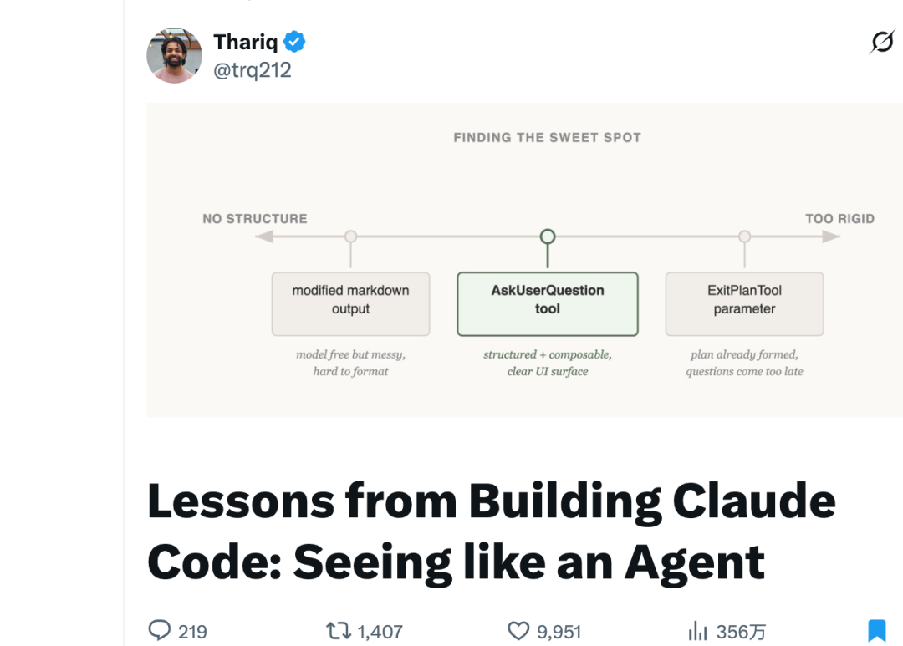
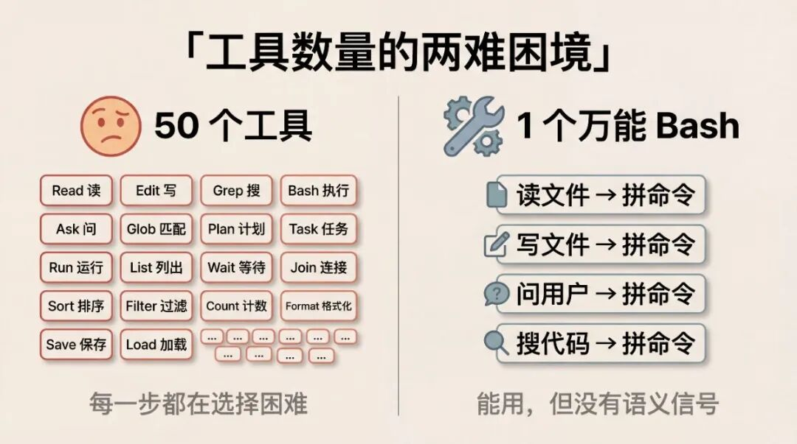
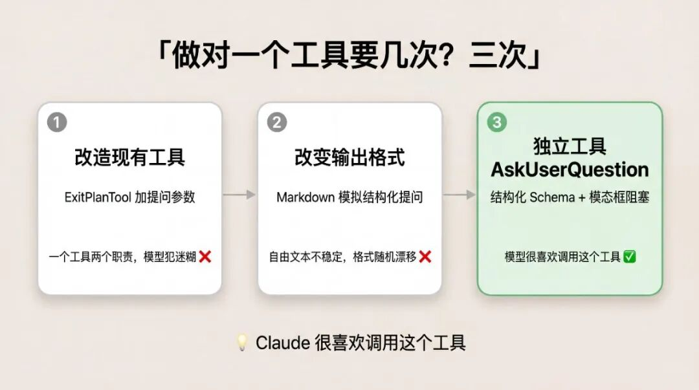
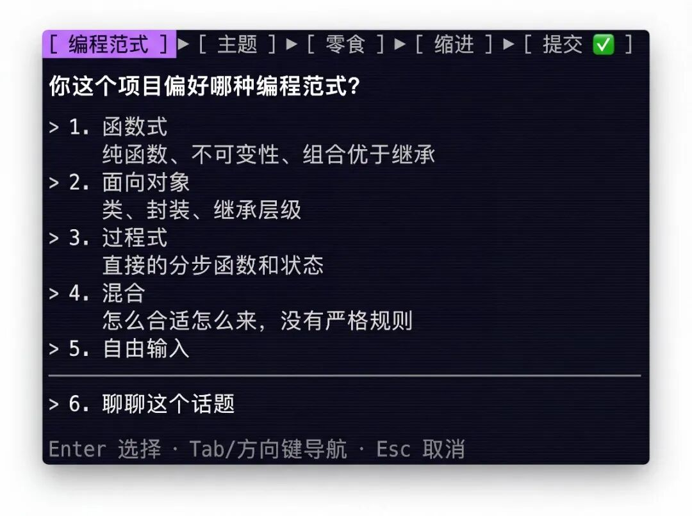
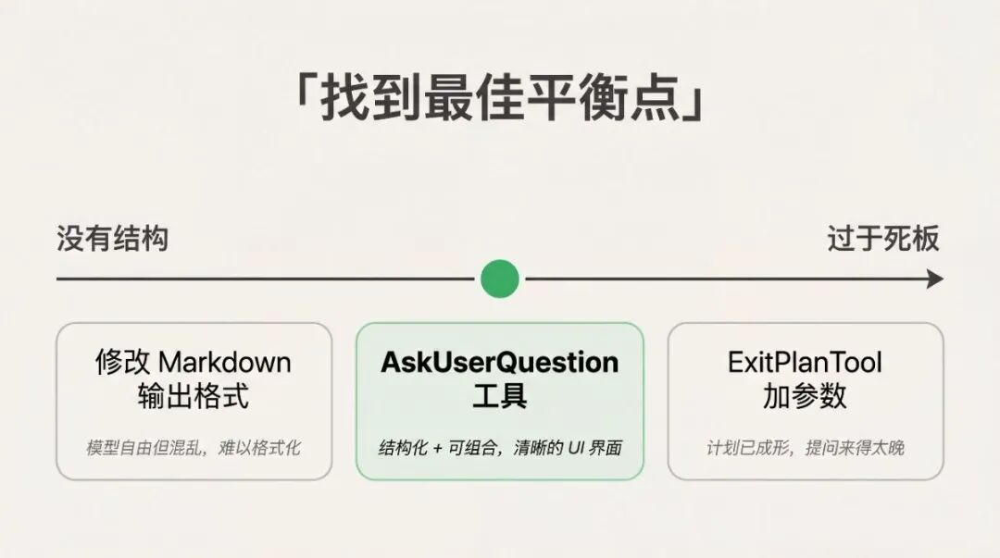
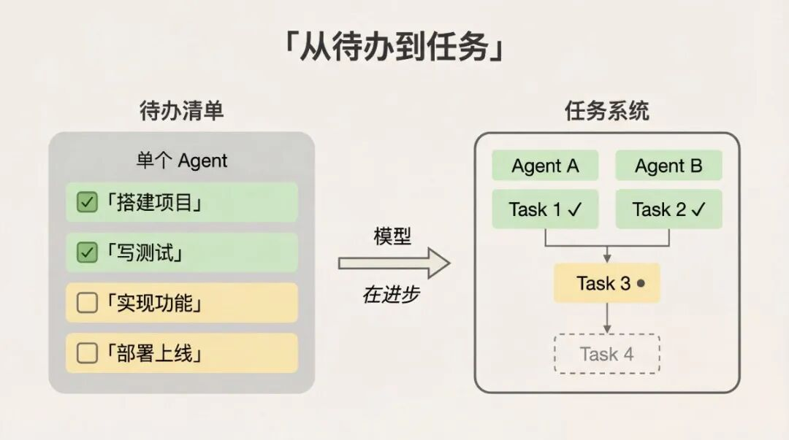
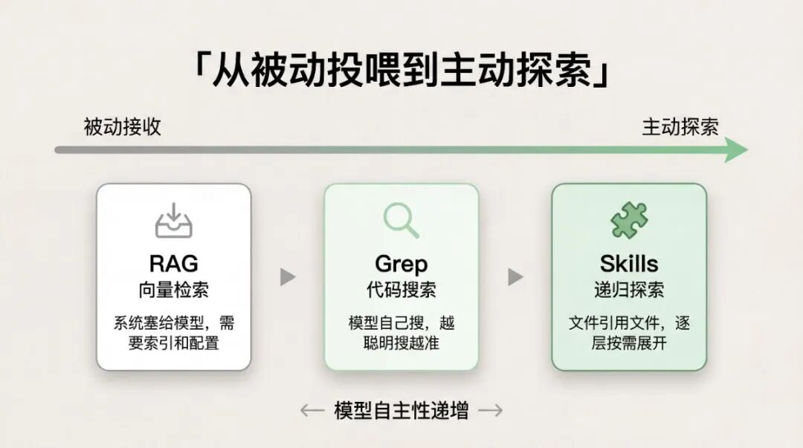

我给 Claude Code 写了 30 多个 Skills，覆盖从选题到排版的整条写作链。
用了大半年，自认为对 Agent 工具设计算有体感了
直到读完 Anthropic Claude Code 负责人 Thariq 那篇关于工具设计的文章
才发现
我的 Skills 和 Agent Team，基本全用错了

1.数学题类比：工具设计的底层框架
Thariq 在开头举了一个类比。
想象你拿到一道很难的数学题，你想用什么工具来解？
纸笔是最低配。能算，但你会被手算速度拖住。
计算器好一些，但你得会用高级功能。
电脑最快最强，但你得知道怎么写代码来解题。
给一个不会编程的人一台电脑，不会比给他一张纸更快。工具要配得上使用者的能力。
agent 也是同一个道理。Claude Code 目前只有大约 20 个工具，新增一个工具的门槛很高。
工具太多？ 每多一个选项，模型在每一步决策时就多一个需要权衡的分支。给它 50 个工具，它会选择困难。
工具太少？ 给它 1 个万能 bash，它理论上能做任何事——但每次都要从零拼命令，没有语义信号告诉它"现在该问用户"还是"该写文件"。就像只给你一把螺丝刀让你装修整套房子，能用，但效率极低。

所以，设计工具之前，先搞清楚你的模型当前能力边界在哪。
怎么搞清楚？Thariq 的方法很朴素：观察它的输出，读它写的东西，反复实验。他把这叫做"See like an agent"——学会用 agent 的视角看问题。
2.三次失败才做对：AskUserQuestion 的迭代故事
这是原文中最具体、最有工程质感的一段。
Claude Code 有一个叫 AskUserQuestion（让 AI 主动向用户提问）的工具。看起来简单，但做对了不容易。

第一次尝试：改造现有工具
最简单的做法：在已有的 ExitPlanTool（Claude Code 的"退出计划模式"工具）上加一个参数，让它在输出计划的同时附带一组问题。
结果 Claude 被搞糊涂了。因为它同时在做两件事——输出计划和提问。如果用户的回答和计划矛盾了怎么办？Claude 是不是得再调用一次？
一个工具承担两个职责，模型就会在角色冲突中犯迷糊。
第二次尝试：改变输出格式
换个思路：不加新工具，而是修改 Claude 的输出格式，让它用特定的 markdown 格式来提问，比如带方括号选项的列表，然后由前端来解析和渲染。
Claude 大致能做到，但不稳定。有时候会在问题后面多追加几句话，有时候漏掉选项，有时候干脆换了一种完全不同的格式。
让模型用自由文本模拟结构化输出，结果大概率不可靠。
第三次尝试：做一个独立工具
最终方案：做一个专门的 AskUserQuestion 工具，Claude 可以在任何时候调用，但特别在 plan mode（Claude Code 的规划模式，先出方案再动手写代码）中被引导使用。工具触发后弹出模态框（弹窗，必须回答才能继续），阻塞 agent 循环，直到用户回答。
这个方案的好处是多重的：结构化 schema（预定义的输入输出格式）保证了输出格式，模态框保证了用户必须回答，工具接口保证了可组合性（可以在 Agent SDK（Anthropic 的智能体开发工具包）或 skills 里引用）。

但 Thariq 说了一句很值得注意的话：
模型是否"愿意"调用某个工具，本身就是这个工具设计好坏的信号。再精巧的工具，如果模型不理解怎么调用，也是白搭。

所以，当模型输出不稳定时，别让它自己凑格式——把自由文本收成结构化工具调用。
3.工具会过时：TodoWrite 到 Task Tool 的演进
AskUserQuestion 讲的是怎么把一个工具从"不对"做到"对"。接下来这个故事更扎心——它讲的是，做对了的东西，怎么变成错的。
Claude Code 刚上线时，模型经常做着做着就忘了自己要干什么。团队的解决方案是 TodoWrite——一个待办列表工具，开头写好计划，每做完一项就勾掉。
光有工具还不够。他们发现 Claude 还是会走神，于是在对话中每隔 5 轮插入一条系统提醒，提醒它当前目标。
这套方案在早期模型上效果不错。
但模型在进步。到了 Opus 4.5 这一代，问题反转了：
1.提醒变成了束缚。 被反复提醒待办列表，Claude 开始觉得它必须严格按照列表执行，而不是根据实际情况灵活调整。
2.多智能体协作需要新范式。 Opus 4.5 在使用子智能体（可以理解为主 agent 派出去处理专项任务的"专家 agent"）方面进步很大，但多个子智能体怎么在一个共享的 Todo List 上协调？
于是他们用 Task Tool 替换了 TodoWrite。

两者的区别不只是名字：
TodoWrite 的核心目的是"帮模型记住目标"——解决的是模型注意力不足的问题。
Task Tool 的核心目的是"帮多个智能体协调"——解决的是多 agent 协作的问题。Tasks 支持依赖关系、跨子智能体共享状态、自由修改和删除。
曾经的救星，后来的枷锁。工具假设的保质期，可能比你想的短。
Thariq 还补了一句实操建议：尽量只支持少量能力相近的模型，这样工具设计的假设才能保持一致。
4.渐进式披露：最优雅的能力扩展方式
最后一个案例不是关于某个具体工具，而是关于一种设计模式：渐进式披露（Progressive Disclosure）。
搜索能力的演进
Claude Code 最早用 RAG 向量数据库（一种让模型检索外部知识的技术）给 Claude 提供上下文。RAG 快是快，但有两个问题：一是需要索引和配置，在不同环境下容易出问题；二是更本质的——Claude 是在被动接收上下文，而不是主动找到它。
后来他们给了 Claude 一个 Grep 工具，让它自己去搜索代码库。效果立竿见影：模型越聪明，主动构建上下文的能力就越强。
再后来，Agent Skills 的引入让渐进式披露成为正式范式。Claude 读取一个 skill 文件，这个文件会引用其他文件，其他文件又引用更深层的文件。模型递归地逐层探索，精确找到需要的信息。
一年时间，Claude 从"几乎不能自己构建上下文"，进化到"在多层文件之间嵌套搜索"。

Claude Code Guide：不加工具也能扩展能力
Claude Code 有大约 20 个工具，增加新工具的门槛很高。但有一个实际问题：用户会问 Claude 关于 Claude Code 自身的问题，比如怎么加一个 MCP（Model Context Protocol，一种让 AI 连接外部工具的协议），某个 slash command 是干什么的。Claude 回答不了。
最粗暴的解法：把所有使用文档塞进 system prompt（给模型的底层指令）。但用户很少问这类问题，塞进去只会占用上下文、干扰主业（写代码）。Thariq 把这叫"上下文腐烂"——你把 20 页产品文档全塞给模型，结果它连第一条需求都答不准，就是这个现象。
他们的做法是做了一个叫 Claude Code Guide 的子智能体——你在 Claude Code 里问"怎么配置 MCP"或"hooks 怎么用"时，它不是自己硬答，而是在后台唤起这个专门的子智能体去查文档，查完再把答案返回给你。你可能用过但没意识到，因为它是透明运行的。
不增加工具数量，通过子智能体也能扩展 agent 的行动空间。
一句话：不要一次性把所有信息塞进 system prompt。给它一张地图，而不是一本百科全书。
See like an Agent
回看整篇文章，Thariq 没有给出一套严格的工具设计规则。他说得很直接：
但四个案例里，藏着三条可以直接拿走的东西：
观察，不要猜。 AskUserQuestion 迭代了三次，每次都是看 Claude 实际表现后才动手改，不是从理论推的。模型"喜不喜欢"调用某个工具，就是最真实的设计反馈。
定期复盘工具假设。 TodoWrite 在旧模型上救命，在新模型上添堵。模型能力半年一个台阶，你的工具假设跟不跟得上？
给地图，别给百科全书。 从 RAG 到 Grep 到 Skills 到子智能体，一路走下来方向只有一个：让模型自己决定要什么信息，而不是你替它决定。
最后用 Thariq 的原话收尾：
“Experiment often, read your outputs, try new things. See like an agent.”
（多做实验，读你的输出，尝试新东西。学会用 agent 的视角看问题。）